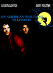
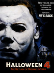
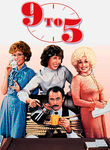
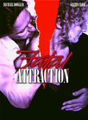
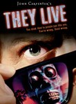
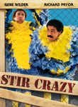
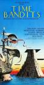
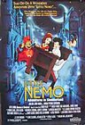

Historical: IMDb 1980s
http://www.imdb.com/chart/1980s
Showing Movies that were previously on this list. (Historical tracking started near the start of 2010.)- Normal View
List contains: 479 items, 850.6 hours. (16 are missing runtime)
Showing Movies that were previously on this list. (Historical tracking started near the start of 2010.)- Normal View
List contains: 479 items, 850.6 hours. (16 are missing runtime)
Stephen Klancher
...has seen 194
...has seen 378.1 hours
...has not seen 472.5 hours

Timeline - Covers
Most Recent:
The Dark Crystal
...has seen 194
...has seen 378.1 hours
...has not seen 472.5 hours
Timeline - Covers
Most Recent:
The Dark Crystal

Seen 110 times, Last seen February 14, 2023

The Shawshank Redemption (1994)
Stephen Klancher: SEEN 
I'm not sure it forever deserves the top spot on IMDB, but definitely a good movie. I remember watching it on TV some night in Jr High when I was supposed to be working some project... let's see, do a diorama of a scene from 1984 or watch Shawshank? Hmm...
Seen 85 times, Last seen February 13, 2023

Eternal Sunshine of the Spotless Mind (2004) Releases on 1969-12-31
Stephen Klancher: SEEN
I love this movie. Would I zap my brain? Probably. Maybe I already did. How would I know? Whatever. I love this movie.
Seen 97 times, Last seen February 12, 2023

Fight Club (1999)
Stephen Klancher: SEEN
There's so much that is cool about this movie. But mostly the impact of the reveal the first time you watch it. The sort of Sixth-Sense change where you can then rewatch it as an entirely different experience.
Seen 2386 times, Last seen February 11, 2023

Back to the Future (1985)
Stephen Klancher: SEEN
I love the Back to the Future trilogy. Yes even the third one. I've always especially loved the music. Watching Predator at some point I was wondering why it was reminding me of Back to the Future... and it turns out the same guy did the music...
Seen 85 times, Last seen February 10, 2023

The Muppet Movie (1979) Releases on 1979-06-22
Seen 116 times, Last seen February 8, 2023

The Wizard of Oz (1939) Releases on 1939-08-25
Stephen Klancher: SEEN
I liked the Wizard of Oz and have often been excited to see newer takes on it. At some point my mom took me to see Wicked and I loved it. Though it turned out disappointing, I remember being excited over the SciFi variant Tin Man. Also, Zardoz. haha.
Seen 103 times, Last seen February 7, 2023

The Matrix (1999)
Stephen Klancher: SEEN
My parents (divorced) got in an argument over this movie. My dad wanted to take me to see it, but my mom, more strict at the time, didn't want it to happen. At some point she finally gave in, but then we had to go see it in the cheaper, crappier theater. It was still amazing, of course. And as Bob can attest, at any given time my dad's house on Mountain Oak probably had the DVD of this or Fifth Element playing. It's too bad they never made any sequels to this. <i>None. Never.</i>
Seen 79 times, Last seen February 6, 2023

Groundhog Day (1993) Releases on 1969-12-31
Stephen Klancher: SEEN
The joke is obvious but it's also the truth: I watched this movie over and over and over. This was one of a handful of movies we rewatched frequently growing up at my dad's house. I love Bill Murray and I love this movie.
Seen 85 times, Last seen February 5, 2023

Se7en (1995)
Stephen Klancher: SEEN
This movie did not strike me as much as most people I guess. Am I too desensitized? I just seem to remember Brad Pitt swearing a lot.
Seen 107 times, Last seen February 4, 2023

Cool Hand Luke (1967)
Stephen Klancher: June 21, 2009
Aptly named... he's a cool character. The Lucy and 50 eggs scenes were fun. I liked the simple question he asked of god near the end: "You made me like I am; just where do I fit?"
Seen 120 times, Last seen February 1, 2023

The Big Lebowski (1998) Releases on 1998-02-15
Stephen Klancher: SEEN
Brett introduced me to Lebowski and I have since watched it many times. Love it.

Seen 2378 times, Last seen January 28, 2023
The Princess Bride (1987)
Stephen Klancher: SEEN
We rented this movie at my dad's house when I was very young. So young in fact that I had no idea what the movie was called. I just had a vague memory of a really cool movie about a man in black with the storytelling grandfather as a frame for the adventure. In high school somehow this movie came up and I was excited to learn not only the title of the movie lost in my memories, but also that many other people liked it too. "As you wish" and "My name is Inigo Montoya" always make me smile.

Seen 119 times, Last seen January 24, 2023

Star Wars: Episode IV - A New Hope (1977)
Stephen Klancher: SEEN
I am very much a Star Wars fan. I've read about 40 books, played a handful of games, and seen most of what there is to see. There were some summers growing up where I was mostly watching the Star Wars trilogy and playing Mario 3.
2011-02-26 - Watched Star Wars Begins, the excellent fan-made documentary.
2011-02-26 - Watched Star Wars Begins, the excellent fan-made documentary.
Seen 90 times, Last seen December 31, 2022

The Lord of the Rings: The Fellowship of the Ring (2001) Releases on 2001-12-19
Stephen Klancher: SEEN
I read half-way through the books, quit for a while, then finished right before this came out. I actually like the movies better. I enjoy all three movies, but one notable thing about this one was much fun it was that everyone around me was really into it at the time. The fact that the girls I was friends with and girlfriend at the time were drooling over the actors just added another reason for everyone to be enthusiastic and want to keep rewatching it. So yeah, fun times. :-)

Seen 2264 times, Last seen December 20, 2017

Star Wars: Episode V - The Empire Strikes Back (1980)
Stephen Klancher: SEEN
This was the one I watched least when I was younger. The slightly less familiarity has made it more attractive for rewatching in later years. Also it's Star Wars. <3
Seen 2282 times, Last seen December 20, 2017

The Shining (1980)
Stephen Klancher: August 21, 2008
There are some seriously creepy moments in this movie. Even though I knew the gist of it and had seen parts on TV, when I finally sat down and watched it straight through, it freaked me out.
Seen 2278 times, Last seen December 20, 2017

Raiders of the Lost Ark (1981)
Stephen Klancher: SEEN
I love Indiana Jones and Harrison Ford. I watched a lot of Star Wars and Indiana Jones while growing up. Just thinking about it makes me want to watch again...
Seen 2277 times, Last seen December 20, 2017

Blade Runner (1982)
Stephen Klancher: SEEN
I watched this and only thought it was ok. I found out later that the Director's Cut which I watched was lacking the narration of the original. I often really enjoy narration in movies and might have enjoyed this more if I had a clearer understanding of what was going on in some parts. Maybe someday I'll have to rewatch the original version.
Seen 1831 times, Last seen December 20, 2017

E.T.: The Extra-Terrestrial (1982)

Seen 1033 times, Last seen December 20, 2017

Fast Times at Ridgemont High (1982)
Seen 1845 times, Last seen December 20, 2017

The Thing (1982)
Stephen Klancher: February 21, 2010
Awesome. Kurt Russell playing a badass with a flamethrower... The alien effects were pretty great. Especially the stomach that bit off the doctor's arms and the head-spider.
Seen 111 times, Last seen December 20, 2017
Octopussy (1983) Releases on 1983-06-10
Seen 1862 times, Last seen December 20, 2017
The Outsiders (1983) Releases on 1983-03-25
Seen 2238 times, Last seen December 20, 2017

Star Wars: Episode VI - Return of the Jedi (1983)
Seen 2277 times, Last seen December 20, 2017
Scarface (1983) Releases on 1969-12-31
Seen 232 times, Last seen December 20, 2017
Trading Places (1983) Releases on 1969-12-31


Seen 1585 times, Last seen December 20, 2017

Once Upon a Time in America (1984) Releases on 1984-06-01
Stephen Klancher: December 7, 2008
That was a very slow movie. It wasn't really a bad slow, just that every scene took its time. And it adds up... over three and a half hours.
Seen 2274 times, Last seen December 20, 2017
The Terminator (1984) Releases on 1969-12-31
Stephen Klancher: May 13, 2009
I was surprised to realize I had not actually seen this. It seemed like I must have, so I had already marked it as seen. Really really shows its age at this point, but still a decent movie. The second is much better though. Part of the problem is I already know everything about this from 2 sequels and part of a TV show. Glad I made sure I had seen this before T4 comes out.


Seen 104 times, Last seen December 20, 2017
Santa Claus (1985) Releases on 1985-11-27
Seen 117 times, Last seen December 20, 2017

A View to a Kill (1985) Releases on 1985-05-24
Seen 2278 times, Last seen December 20, 2017

Aliens (1986)
Stephen Klancher: January 17, 2008
Game over man! A totally different kind of cool than the first one. Plus like half of the sounds from StarCraft are from this movie.
Seen 90 times, Last seen December 20, 2017
Highlander (1986) Releases on 1986-03-07
Seen 1025 times, Last seen December 20, 2017

Labyrinth (1986) Releases on 1986-06-27
Seen 2277 times, Last seen December 20, 2017

Stand by Me (1986)
Stephen Klancher: September 13, 2009
Young Wil Wheaton! Fun movie. I kept thinking someone was going to get hit by a train.
Seen 1865 times, Last seen December 20, 2017
Top Gun (1986) Releases on 1986-05-16
Seen 1706 times, Last seen December 20, 2017
Dirty Dancing (1987) Releases on 1987-08-21
Seen 2279 times, Last seen December 20, 2017
Full Metal Jacket (1987) Releases on 1987-06-26
Stephen Klancher: February 5, 2002
I remember watching this after coming home from school some day when I was in a really bad mood early 2002 or late 2001. Something about a girl probably. Anyway, crazy movie. The first half with the Drill Instructor vs Private Pyle was more memorable than the second half.
Seen 1765 times, Last seen December 20, 2017

Predator (1987)
Stephen Klancher: February 4, 2009
Cool movie. I had seen most of it before, but now finally the whole thing, all in one sitting, not distracted.

Seen 2200 times, Last seen December 20, 2017
Die Hard (1988) Releases on 1988-07-15
Stephen Klancher: April 13, 2009
Yeah, I really hadn't seen Die Hard until today. That was a great action movie. I am very much a Bruce Willis fan, and Alan Rickman is a fantastic villain. Contrary to many action movies where there are only a few scenes of interest, I enjoyed this entire movie.

Seen 1544 times, Last seen December 20, 2017

Dead Poets Society (1989) Releases on 1969-12-31
Seen 1630 times, Last seen December 20, 2017
Indiana Jones and the Last Crusade (1989)
Stephen Klancher: SEEN
Harrison Ford and Sean Connery fighting Nazis! Growing up, the Indiana Jones movies were the "other" trilogy, second to Star Wars.
Seen 493 times, Last seen December 20, 2017
Christmas Vacation (1989) Releases on 1989-12-01
Seen 14 times, Last seen December 19, 2017

American Beauty (1999)
Stephen Klancher: December 31, 2002
Fantastic movie. Many good quotables. I tend to rather watch something new instead of rewatching anything, but if I see this on I'm completely unable to pull myself away.
Seen 15 times, Last seen December 18, 2017

Vertigo (1958) Releases on 1969-12-31
Seen 14 times, Last seen December 17, 2017

Dr. Strangelove or: How I Learned to Stop Worrying and Love the Bomb (1964)
Stephen Klancher: SEEN
Peter Sellers is amazing. Just remember, "you can't fight in here! This is the War Room!"
Seen 1439 times, Last seen December 16, 2017

Amadeus (1984) Releases on 1969-12-31
Stephen Klancher: March 9, 2004
I think watched this for extra credit for a music class in the beginning of college. It is a super fun movie. Very enjoyable and cool music.
Seen 94 times, Last seen December 16, 2017
St. Elmo's Fire (1985) Releases on 1985-06-28
Seen 1825 times, Last seen December 16, 2017

Platoon (1986) Releases on 1986-12-24
Seen 20 times, Last seen December 16, 2017
She's Gotta Have It (1986) Releases on 1986-08-08
Seen 105 times, Last seen December 16, 2017

Planes, Trains & Automobiles (1987)

Seen 41 times, Last seen December 16, 2017
The Punisher (1989) Releases on 1989-10-05
Seen 15 times, Last seen December 15, 2017
Casablanca (1942)
Stephen Klancher: August 4, 2003
I borrowed and watched this summer of 2002. Even then I had a vague idea that I wanted to see some of the most well known movies, with the IMDB top 250 as my idea for a good start.
I really enjoyed it! And so many elements or lines in it that could be called cliche now were actually their origin. This is the movie that solidified my interest in watching well rated "old movies." Compare to Citizen Kane.
I really enjoyed it! And so many elements or lines in it that could be called cliche now were actually their origin. This is the movie that solidified my interest in watching well rated "old movies." Compare to Citizen Kane.
Seen 18 times, Last seen December 14, 2017

City of God (2002) Releases on 2004-02-13
Stephen Klancher: SEEN
I got a hold of this movie because of Erin near the beginning of college, although I can't remember for certain if I watched it with her or not. The main impression I remember about this movie is that it was vivid both in color and content.
Seen 16 times, Last seen December 12, 2017

Inception (2010) Releases on 2010-07-16
Stephen Klancher: July 17, 2010
Dreams within dreams... there was never a chance I wouldn't like this movie. It was incredibly fun.
Seen 419 times, Last seen December 10, 2017

Come and See (1985) Releases on 1985-10-17


Seen 134 times, Last seen December 9, 2017

Clue (1985) Releases on 1969-12-31
Seen 148 times, Last seen December 9, 2017
Field of Dreams (1989) Releases on 1969-12-31
Seen 471 times, Last seen December 9, 2017
Road House (1989) Releases on 1989-05-19
Seen 16 times, Last seen December 9, 2017

The Lord of the Rings: The Return of the King (2003) Releases on 2003-12-17
Stephen Klancher: December 17, 2003
Probably my favorite of the trilogy, but they are all fantastic.
Seen 14 times, Last seen December 8, 2017

Schindler's List (1993)
Stephen Klancher: SEEN
I watched this in my 9th grade history class. Liam Neeson back when his only power was being German. No force, no lightsaber. But seriously, this is a serious movie. I don't remember much of the specifics at this point, but watching Life is Beautiful more recently made me think of watching this.
Seen 13 times, Last seen December 7, 2017

The Dark Knight (2008)
Stephen Klancher: July 19, 2008
Saw on the IMAX twice on the first Saturday after release. OMG so good! Got a picture of me with the Joker at the theater too.


Seen 166 times, Last seen December 2, 2017

Adventures in Babysitting (1987) Releases on 1987-06-19
Seen 947 times, Last seen December 2, 2017
The Lost Boys (1987) Releases on 1987-07-31
Seen 15 times, Last seen November 26, 2017

Red Sonja (1985) Releases on 1985-07-03
Seen 629 times, Last seen November 25, 2017
The Blue Lagoon (1980) Releases on 1980-07-05
Seen 1156 times, Last seen November 25, 2017
A Nightmare on Elm Street (1984) Releases on 1984-11-16

Seen 120 times, Last seen November 25, 2017
Masters of the Universe (1987) Releases on 1987-08-07
Seen 101 times, Last seen November 25, 2017

The Running Man (1987)
Stephen Klancher: February 3, 2009
The Butcher of Bakersfield! I never knew what that title was from before. Arnold + 80 movie = Awesome. Also two people in this movie later became governors (Jesse Ventura plays Captain Freedom). Clearly, this movie was their introduction to dystopian politics.
Seen 14 times, Last seen November 18, 2017
The Whales of August (1987) Releases on 1987-08-19
Seen 176 times, Last seen November 18, 2017
Child's Play (1988) Releases on 1988-11-09
Seen 436 times, Last seen November 18, 2017

Cinema Paradiso (1988) Releases on 1969-12-31
Stephen Klancher: SEEN
I watched this with my mom in Bakersfield at some point. I remember hearing the title and not thinking I was interested, until either I looked it up or she told me it was on the IMDb list... now it was part of the mission! The movie itself was okay...
Seen 169 times, Last seen November 18, 2017

Bill & Ted's Excellent Adventure (1989)
Seen 21 times, Last seen November 18, 2017

Little Monsters (1989)
Stephen Klancher: SEEN
I watched this long ago and just remember it as the movie where Fred Savage pissed in some kid's apple juice.
Seen 53 times, Last seen November 12, 2017
Halloween III: Season of the Witch (1982) Releases on 1982-10-22
Seen 365 times, Last seen November 11, 2017
Friday the 13th (1980) Releases on 1980-05-09
Seen 61 times, Last seen November 11, 2017

An American Werewolf in London (1981)
Seen 62 times, Last seen November 11, 2017
Friday the 13th Part 2 (1981) Releases on 1981-05-01
Seen 83 times, Last seen November 11, 2017
Halloween II (1981) Releases on 1981-10-30

Seen 117 times, Last seen November 11, 2017
Risky Business (1983) Releases on 1983-08-05
Seen 133 times, Last seen November 11, 2017
Children of the Corn (1984) Releases on 1984-03-09
Seen 38 times, Last seen November 11, 2017
Fright Night (1985) Releases on 1985-08-02
Seen 119 times, Last seen November 11, 2017
Hellraiser (1987) Releases on 1987-09-18
Seen 84 times, Last seen November 11, 2017

The Monster Squad (1987) Releases on 1987-08-14
Seen 77 times, Last seen November 11, 2017

Halloween 4: The Return of Michael Myers (1988) Releases on 1988-10-21
Seen 64 times, Last seen November 11, 2017
Halloween 5 (1989) Releases on 1989-10-13
Seen 146 times, Last seen November 11, 2017
Pet Sematary (1989) Releases on 1989-04-21
Seen 949 times, Last seen November 3, 2017

The Elephant Man (1980) Releases on 1980-10-10
Seen 34 times, Last seen November 3, 2017
A Nightmare on Elm Street Part 2: Freddy's Revenge (1985) Releases on 1985-11-01
Seen 40 times, Last seen November 3, 2017
A Nightmare on Elm Street 3: Dream Warriors (1987) Releases on 1987-02-27
Seen 51 times, Last seen October 28, 2017
Friday the 13th: The Final Chapter (1984) Releases on 1984-04-13
Seen 15 times, Last seen October 28, 2017

Silver Bullet (1985) Releases on 0000-00-00
Seen 26 times, Last seen October 28, 2017
The Abyss (1989) Releases on 1989-08-09
Stephen Klancher: SEEN
Brett borrowed this from someone and we actually only watched half of it. I still wanted to finish it, but even with my compulsion to finish things, the desire was pretty weak for this movie.
Seen 34 times, Last seen October 26, 2017

Friday the 13th Part III (1982) Releases on 1982-08-13
Seen 781 times, Last seen October 26, 2017
Indiana Jones and the Temple of Doom (1984)
Stephen Klancher: SEEN
The middle of the trilogy. And like Empire Strikes back, I watched the middle least while growing up. With this one though it was because it was the one of the three that (at least initially) we didn't own. I think later we taped it off of TV or something. So it had that appeal of "rarity" as the one I didn't get to see as often.

Seen 21 times, Last seen October 15, 2017

Urban Cowboy (1980) Releases on 1980-06-06

Seen 148 times, Last seen October 14, 2017
Big Trouble in Little China (1986) Releases on 1986-07-02
Stephen Klancher: SEEN
I watched this at some point at Brett's house, but must have forgotten to mark it at the time. I loved it! Very fun movie.
Seen 12 times, Last seen October 14, 2017
Killer Klowns from Outer Space (1988) Releases on 1988-05-27
Seen 418 times, Last seen October 7, 2017

Nausica of the Valley of the Wind (1984)

Seen 21 times, Last seen October 7, 2017
Flight of the Navigator (1986) Releases on 1986-07-30
Seen 20 times, Last seen September 30, 2017

Nine to Five (1980) Releases on 1980-12-19
Seen 570 times, Last seen September 30, 2017

Raging Bull (1980) Releases on 1980-12-19
Stephen Klancher: September 30, 2008
"You fuck my wife?" Is the moral not to be an asshole and beat your wife? I didn't care for this movie.

Seen 77 times, Last seen September 30, 2017
Never Say Never Again (1983) Releases on 1983-10-07
Seen 429 times, Last seen September 30, 2017
Paris, Texas (1984) Releases on 1984-09-19
Seen 186 times, Last seen September 30, 2017

Blue Velvet (1986) Releases on 1986-09-19
Seen 737 times, Last seen September 30, 2017
Pretty in Pink (1986) Releases on 1986-02-28
Seen 36 times, Last seen September 30, 2017

Fatal Attraction (1987) Releases on 1987-09-18
Seen 41 times, Last seen September 30, 2017
The Great Outdoors (1988) Releases on 1988-06-17
Seen 142 times, Last seen September 23, 2017

Star Trek: The Wrath of Khan (1982)
Seen 1773 times, Last seen September 20, 2017

Alien (1979)
Stephen Klancher: January 15, 2008
I thought I had seen it before. Finally saw for sure now that I'm going through all the Alien and Predator movies with Nick.
Very cool movie.
Very cool movie.
Seen 14 times, Last seen September 19, 2017
The King of Comedy (1982) Releases on 1982-12-18
Seen 27 times, Last seen September 19, 2017
Lifeforce (1985) Releases on 1969-12-31
Seen 60 times, Last seen August 20, 2017

The Living Daylights (1987) Releases on 1987-07-31
Seen 1143 times, Last seen August 20, 2017

Rain Man (1988) Releases on 1969-12-31
Stephen Klancher: SEEN
I remember watching this with Punchie... I assume we finished it, although I can't say I remember how it ended.
Seen 215 times, Last seen August 13, 2017

Steel Magnolias (1989) Releases on 1989-11-15
Seen 6 times, Last seen August 6, 2017
Bachelor Party (1984) Releases on 1984-06-29
Seen 142 times, Last seen July 29, 2017

For Your Eyes Only (1981) Releases on 1981-06-26
Seen 6 times, Last seen July 29, 2017
Day of the Dead (1985) Releases on 1985-07-19

Seen 20 times, Last seen July 22, 2017
Some Kind of Wonderful (1987) Releases on 1987-02-27

Seen 13 times, Last seen July 16, 2017
Places in the Heart (1984) Releases on 1984-10-05
Seen 98 times, Last seen July 16, 2017
European Vacation (1985) Releases on 1985-07-26
Seen 13 times, Last seen July 16, 2017

Born on the Fourth of July (1989)
Seen 13 times, Last seen July 8, 2017
Just One of the Guys (1985) Releases on 1985-04-26
Seen 433 times, Last seen July 8, 2017

My Neighbor Totoro (1988)
Stephen Klancher: April 21, 2010
Cat-bus is awesome. Most of what I like in this movie is better done in Spirited Away. But still this was a relaxing movie with good animation and occasionally good music too.
Seen 517 times, Last seen July 2, 2017
This Is Spinal Tap (1984) Releases on 1984-03-02
Seen 20 times, Last seen July 2, 2017
A Room with a View (1985) Releases on 1985-12-13
Seen 10 times, Last seen July 2, 2017
The Unbearable Lightness of Being (1988) Releases on 1988-02-05
Seen 12 times, Last seen June 24, 2017
The Witches of Eastwick (1987) Releases on 1987-06-12
Seen 39 times, Last seen June 17, 2017

Clash of the Titans (1981) Releases on 1981-06-12

Seen 6 times, Last seen June 3, 2017
The Cannonball Run (1981) Releases on 1981-06-19
Seen 13 times, Last seen June 3, 2017

The Dark Crystal (1982) Releases on 1982-12-17
Stephen Klancher: March 23, 2019
Seen 69 times, Last seen May 27, 2017

Escape from New York (1981) Releases on 1981-07-10
Seen 5 times, Last seen May 27, 2017
Southern Comfort (1981) Releases on 1981-09-25
Seen 69 times, Last seen May 27, 2017
Howard the Duck (1986) Releases on 1986-08-01
Seen 6 times, Last seen May 27, 2017
My Stepmother Is an Alien (1988) Releases on 1988-12-09
Seen 126 times, Last seen May 13, 2017
Revenge of the Nerds (1984) Releases on 1984-07-20

Seen 46 times, Last seen April 23, 2017

They Live (1988) Releases on 1988-11-04

Seen 24 times, Last seen April 2, 2017

Do the Right Thing (1989)
Stephen Klancher: November 5, 2003
I watched this in the first quarter of college for an Anthropology class titled Debating Multiculturalism. Though it's not the kind of thing I'd want to watch all the time, this movie did a great job of conveying the environment of racial tension. For many of the characters you could see their blatant flaws, but also their more human qualities that made them believable characters and made the events in the movie all the more tragic.
Seen 6 times, Last seen March 26, 2017
King Kong Lives (1986) Releases on 1986-12-19
Seen 823 times, Last seen March 26, 2017

The Untouchables (1987) Releases on 1987-06-03

Seen 6 times, Last seen February 27, 2017
Honeysuckle Rose (1980) Releases on 1980-07-18

Seen 13 times, Last seen February 26, 2017
Moonstruck (1987) Releases on 1987-12-16
Seen 105 times, Last seen February 26, 2017
When Harry Met Sally... (1989) Releases on 1989-07-21
Seen 355 times, Last seen February 19, 2017
Caddyshack (1980)
Stephen Klancher: March 25, 2009
Chevy Chase was awesome. Murray was amusing, but way better in later movies. And the judge's daughter was hot!
Seen 13 times, Last seen February 12, 2017
Ordinary People (1980) Releases on 1980-09-19


Seen 45 times, Last seen January 22, 2017
Jaws: The Revenge (1987) Releases on 1987-07-17
Seen 210 times, Last seen January 15, 2017
Flash Gordon (1980) Releases on 1980-12-05

Seen 41 times, Last seen January 1, 2017
Ernest Saves Christmas (1988) Releases on 1988-11-11
Seen 14 times, Last seen December 25, 2016
A Passage to India (1984) Releases on 1984-12-14

Seen 63 times, Last seen November 6, 2016
Cannibal Holocaust (1980) Releases on 1980-02-07
Seen 12 times, Last seen October 24, 2016
Murphy's Romance (1985) Releases on 1985-12-25


Seen 373 times, Last seen October 15, 2016
Mad Max 2: The Road Warrior (1981) Releases on 1982-04-28

Seen 126 times, Last seen September 18, 2016
Grease 2 (1982) Releases on 1982-06-11
Seen 6 times, Last seen September 18, 2016
Star Trek IV: The Voyage Home (1986) Releases on 1986-11-26
Seen 13 times, Last seen September 18, 2016
Kickboxer (1989) Releases on 1989-04-20
Seen 13 times, Last seen September 18, 2016
See No Evil, Hear No Evil (1989) Releases on 1989-05-12
Seen 6 times, Last seen September 11, 2016

Stir Crazy (1980) Releases on 1980-12-12
Seen 14 times, Last seen September 11, 2016
An Officer and a Gentleman (1982) Releases on 1982-08-13
Seen 5 times, Last seen September 11, 2016
The Woman in Red (1984) Releases on 1984-08-15
Seen 6 times, Last seen September 11, 2016
Haunted Honeymoon (1986) Releases on 1986-07-25
Seen 154 times, Last seen September 11, 2016
Can't Buy Me Love (1987) Releases on 1987-08-14

Seen 263 times, Last seen September 4, 2016

Mad Max Beyond Thunderdome (1985) Releases on 1985-07-10
Seen 6 times, Last seen August 28, 2016

Time Bandits (1981) Releases on 1981-11-06
Seen 6 times, Last seen August 28, 2016
Summer School (1987) Releases on 1987-07-22
Seen 13 times, Last seen August 1, 2016
Heartbreak Ridge (1986) Releases on 1986-12-05


Seen 34 times, Last seen July 31, 2016
Wall Street (1987) Releases on 1987-12-11
Seen 12 times, Last seen July 25, 2016
Back to School (1986) Releases on 1986-06-13

Seen 10 times, Last seen July 22, 2016

Wild Strawberries (1957)
Seen 16 times, Last seen July 20, 2016

Up (2009)
Stephen Klancher: June 14, 2009
That was a fantastic movie. Visually very pretty. The kid and the dog are a great counterpoint to the old man. Not many movies manage to be so happy and kid -friendly and actually be so amazing. I walked out of the theater happy!

Seen 5 times, Last seen July 19, 2016
Year of the Dragon (1985) Releases on 1985-08-16
Seen 14 times, Last seen July 18, 2016

Lawrence of Arabia (1962)
Stephen Klancher: July 2, 2008
I remember my mom telling me for a long time that this was her favorite movie, so I was excited to watch it. Very cool epic.

Seen 12 times, Last seen July 13, 2016

Citizen Kane (1941)
Stephen Klancher: February 12, 2008
Overrated. Compare to Casablanca because they are both "old movies" (1 year apart) and both always ranked high on movie lists.
Seen 15 times, Last seen July 12, 2016

Django Unchained (2012) Releases on 2012-12-25
Seen 13 times, Last seen July 10, 2016

City Lights (1931)
Stephen Klancher: October 20, 2008
A few lol moments. I'm not very into silent films. I think the main role they should play in modern times is a lesson for filmmakers: You can communicate without saying something directly in dialog.
Seen 34 times, Last seen June 28, 2016
The Color Purple (1985) Releases on 1985-12-18
Seen 18 times, Last seen June 27, 2016

12 Angry Men (1957)
Stephen Klancher: October 19, 2007
I actually saw the 1997 version first (Tony Danza!), but I love them both. Such a great thing to have a story focused down to pretty much one room and just watching the characters interact. I liked this (both versions actually) a lot.
Seen 11 times, Last seen June 25, 2016

The Godfather: Part II (1974)
Stephen Klancher: January 2, 2004
I can't say I remember a lot about this movie other than the fact that I watched with Bob not long after college started. And that he heard the third movie was bad so he refused to watch it... so this is where we stopped.
Seen 13 times, Last seen June 24, 2016

The Godfather (1972) Releases on 1972-03-24
Stephen Klancher: SEEN
I don't remember much about this movie directly. The main thing I remember is a comment from a friend while we all watched it together the summer before college. My girlfriend at the time was either disinterested or bothered by the violence, whereas I thought it was a cool movie. By my friend's observation, this was the first time in a long time that I insisted on an opinion contrary to hers. I don't remember being that bad, but the observation was memorable, and this movie reminds me of it.

Seen 1 times, Last seen June 21, 2016

Star Wars: The Force Awakens (2015)


Seen 4 times, Last seen June 14, 2016

The Wolf of Wall Street (2013)

Seen 2 times, Last seen June 11, 2016

Guardians of the Galaxy (2014)
Stephen Klancher: August 12, 2014
Incredibly fun! All the more so since I went in thinking this was a bunch of characters unknown to me, and then finding out I knew half of them from the Infinity Trilogy.

Seen 6 times, Last seen June 8, 2016
The Imitation Game (2014) Releases on 2014-12-25


Seen 8 times, Last seen June 5, 2016

Finding Nemo (2003)
Stephen Klancher: SEEN
The main thing I remember about this movie was that it had very pretty color. And I think I watched it with a few other people in the common room of our floor of my freshman dorm.


Seen 14 times, Last seen June 2, 2016

Toy Story (1995)
Stephen Klancher: SEEN
Pixar is always pretty solid and Tim Allen plus Tom Hanks make for some fun recognizable voice acting.
Seen 6 times, Last seen May 31, 2016
The Adventures of Buckaroo Banzai Across the 8th Dimension (1984)
Seen 12 times, Last seen May 31, 2016

Braveheart (1995)
Stephen Klancher: SEEN
Hmm, I'm not 100% I've seen the beginning of this movie. See this was the second rated R movie I ever saw, with the first being the movie Speed. My mom was on her honeymoon and I was with cousins and other family at a hotel whereever we were on the coast. So we got away with renting rated R movies. I watched Speed in one room and went to the next room and joined them in watching Braveheart. I mostly just remember the iconic, "You can take our lives, but you can never take our freedom!" Also I saw a statue of William Wallace in front of a castle years later. I should rewatch it someday just because now I know and love Patrick McGoohan.
Seen 11 times, Last seen May 29, 2016

Million Dollar Baby (2004)
Stephen Klancher: July 4, 2009
Excellent movie! A lot like Gran Torino. Those three are fantastic actors. Some really hard to watch scenes, but just very good.
Seen 9 times, Last seen May 28, 2016

Hotel Rwanda (2004)
Seen 10 times, Last seen May 26, 2016

Strangers on a Train (1951)
Stephen Klancher: April 5, 2009
Solid main characters made this a lot of fun to see. I kept seeing Bruno as Bill Murray and Guy as Alan Cumming. Bruno was a great clever-psycho bad guy. And that ending had to be the most dangerous merry-go-round in the world.
Seen 14 times, Last seen May 24, 2016
Mr. Smith Goes to Washington (1939)
Seen 5 times, Last seen May 21, 2016

The Lion King (1994)
Stephen Klancher: SEEN
Back in the good old days of Disney movies... Scar was a great villain and the song Be Prepared is incredible.
Seen 15 times, Last seen May 18, 2016

The Green Mile (1999)
Seen 8 times, Last seen May 17, 2016

Gladiator (2000)
Stephen Klancher: SEEN
Fun movie... I always picture the "walking through the fields" sequence... Also, Battle!
Seen 10 times, Last seen May 13, 2016

It's a Wonderful Life (1946)
Stephen Klancher: SEEN
This was our Christmas movie growing up with my dad and it has ingrained a like of Jimmy Stewart in my brain.
Seen 13 times, Last seen May 12, 2016

The Truman Show (1998)
Stephen Klancher: SEEN
I loved this movie. The only problem was it gave me a more specific scenario for my general paranoia to latch on to. Clearly my life is full of people behind the scenes watching and manipulating my life. If I tune my radio just right I might be able to hear their radio chatter...
Seen 9 times, Last seen May 11, 2016

Barry Lyndon (1975)
Seen 7 times, Last seen May 10, 2016

Howl's Moving Castle (2004) Releases on 1969-12-31
Seen 485 times, Last seen May 9, 2016

Gandhi (1982) Releases on 1969-12-31
Stephen Klancher: January 20, 2010
I learn more from Hollywood than I ever did from school. Seems like some of this stuff would have been cool to learn more about in a history class.
Seen 11 times, Last seen May 9, 2016
Under the Cherry Moon (1986) Releases on 1986-07-02
Seen 13 times, Last seen May 8, 2016

Mary and Max (2008) Releases on 2009-04-09
Stephen Klancher: December 11, 2010
Weirdly funny and endearing. I was surprised how much I enjoyed it.
Seen 11 times, Last seen May 6, 2016

Into the Wild (2007)
Stephen Klancher: April 22, 2009
Good movie. Better than I thought it would be from the description and suited my mood today.
Seen 11 times, Last seen May 3, 2016

Kill Bill: Vol. 1 (2003) Releases on 2003-10-10
Stephen Klancher: October 18, 2003
It was super exciting to go see this in the theater. I had watched other Tarantino movies over the previous year or two and introduced them to Brett sometime after we met. And seeing a movie like that in a theater down the street from a university makes for a fun crowd.
Seen 16 times, Last seen April 30, 2016

It Happened One Night (1934)
Stephen Klancher: July 7, 2009
I was amused at the Walls of Jericho motif and the fact that they asked for a trumpet at the end. This time, dear, he gave a damn.
Seen 12 times, Last seen April 27, 2016
Harry and the Hendersons (1987) Releases on 1987-06-05
Seen 101 times, Last seen April 27, 2016
Licence to Kill (1989) Releases on 1989-07-14

Seen 13 times, Last seen April 20, 2016
My Dinner with Andre (1981) Releases on 1981-10-08
Seen 51 times, Last seen April 20, 2016
Pee-wee's Big Adventure (1985) Releases on 1985-07-26
Seen 20 times, Last seen April 20, 2016
Superman IV: The Quest for Peace (1987) Releases on 1987-07-24
Seen 12 times, Last seen April 15, 2016

Spirited Away (2001) Releases on 2001-07-20
Stephen Klancher: April 6, 2003
I watched with in a theater in Bakersfield with my mom. I don't know if it was a rerelease or late after the release or if this is all they did in Bakersfield, but I seem to remember that it was only playing on this one screen in town and it was an abnormally small one.
I really enjoyed the animation and the fantasy of the whole setting.
I really enjoyed the animation and the fantasy of the whole setting.
Seen 9 times, Last seen April 1, 2016

The Good, the Bad and the Ugly (1966)
Stephen Klancher: SEEN
I knew I had enjoyed Unforgiven and Shane, but this was the movie which convinced me: I really enjoy westerns! I watched this with a girl I met on a bus. She forgot her purse and I argued with the bus driver and made him wait until she came running up from the previous bus stop. Obviously the only thing to do was invite her over for dinner and a western right?
Seen 7 times, Last seen March 30, 2016
History of the World: Part I (1981) Releases on 1981-06-12
Seen 7 times, Last seen March 30, 2016
Victor Victoria (1982) Releases on 1982-03-16
Seen 35 times, Last seen March 30, 2016
Troop Beverly Hills (1989) Releases on 1989-03-24
Seen 6 times, Last seen March 15, 2016
Chariots of Fire (1981) Releases on 0000-00-00

Seen 6 times, Last seen March 15, 2016

The Naked Gun: From the Files of Police Squad! (1988) Releases on 1988-12-02
Seen 18 times, Last seen March 8, 2016
The Last Dragon (1985) Releases on 1985-03-22
Seen 8 times, Last seen March 6, 2016

The Apartment (1960)
Stephen Klancher: December 13, 2008
Early in the movie I felt annoyed that Lemmon felt too much like his comedy character in Some Like It Hot, but overall both he and MacLaine were great in this movie.

Seen 13 times, Last seen March 1, 2016

The Maltese Falcon (1941)
Stephen Klancher: SEEN
One of the early "old" movies that I watched. Enjoying it firmed up the notion that I would actually go through the IMDb list.
Seen 12 times, Last seen February 28, 2016

V for Vendetta (2005) Releases on 2006-03-17
Stephen Klancher: March 17, 2006
I loved this movie. In terms of pure enjoyment coming out of the theater this ranks near the top for me. All kinds of cool.
Seen 10 times, Last seen February 26, 2016

Monty Python and the Holy Grail (1975)
Stephen Klancher: SEEN
I had heard every joke long before I actually saw this, so while it was funny, it was underwhelming and not very memorable.
Seen 7 times, Last seen February 22, 2016

The Prestige (2006)
Stephen Klancher: SEEN
I liked this a lot. Although I seem to remember that something about it lead to an argument. Whatever, very fun.
Seen 21 times, Last seen February 16, 2016
The Verdict (1982) Releases on 1982-12-08
Seen 10 times, Last seen February 10, 2016

Network (1976) Releases on 1969-12-31
Stephen Klancher: April 25, 2010
A lot of cool moments throughout this. I enjoyed watching Faye Dunaway in Bonnie and Clyde just recently and she and William Holden were great in this.
Seen 6 times, Last seen February 9, 2016
Streets of Fire (1984) Releases on 1984-06-01
Seen 12 times, Last seen February 6, 2016

Annie Hall (1977) Releases on 1977-04-20
Stephen Klancher: SEEN
I watched this while doing other things and I'm never sure if that means I'm not giving something a fair chance, but I didn't care for this movie.
Seen 9 times, Last seen February 4, 2016

Jaws (1975) Releases on 1975-06-20
Stephen Klancher: February 16, 2009
Body in the boat scared the fuck out of me. That was an intense movie.
Seen 6 times, Last seen January 26, 2016

Merry Christmas Mr. Lawrence (1983) Releases on 1983-05-10

Seen 6 times, Last seen January 26, 2016
The Last Temptation of Christ (1988) Releases on 1988-08-12

Seen 14 times, Last seen December 22, 2015
Over the Top (1987) Releases on 1987-02-12

Seen 6 times, Last seen November 24, 2015

Short Circuit 2 (1988) Releases on 1988-07-06

Seen 9 times, Last seen October 18, 2015

Terminator 2: Judgment Day (1991)
Seen 7 times, Last seen September 27, 2015

2001: A Space Odyssey (1968)
Stephen Klancher: SEEN
I think I watched parts of this in my Physics class in high school, then came home and watched the rest. I think there was no justification other than that Mr Loritz just wanted to watch the movie.
Seen 6 times, Last seen September 15, 2015
Swamp Thing (1982) Releases on 1982-02-19
Seen 6 times, Last seen August 4, 2015
The Last Unicorn (1982) Releases on 1982-11-19
Seen 6 times, Last seen June 9, 2015
Poltergeist II: The Other Side (1986) Releases on 1986-05-23
Seen 0 times, Last seen June 7, 2015

Boyhood (2014) Releases on 2014-08-15
Seen 5 times, Last seen June 2, 2015
Cannonball Run II (1984) Releases on 1984-06-29
Seen 55 times, Last seen April 28, 2015
Flowers in the Attic (1987) Releases on 1987-11-20
Seen 13 times, Last seen March 3, 2015
Nine 1/2 Weeks (1986) Releases on 1986-02-14
Seen 6 times, Last seen February 10, 2015
Coal Miner's Daughter (1980) Releases on 1980-03-07
Seen 6 times, Last seen February 3, 2015
Out of Africa (1985) Releases on 1985-12-10
Seen 6 times, Last seen December 22, 2014
The Sure Thing (1985) Releases on 1985-03-01
Seen 6 times, Last seen December 1, 2014
Working Girl (1988) Releases on 1988-12-20

Seen 5 times, Last seen September 19, 2014
Slumdog Millionaire (2008)
Stephen Klancher: February 15, 2009
Fantastic music and a very well put together movie. I can see why it was so well liked.
Seen 13 times, Last seen August 31, 2014
The World According to Garp (1982) Releases on 1982-07-23
Seen 6 times, Last seen August 31, 2014
Little Shop of Horrors (1986) Releases on 1986-12-19
Seen 13 times, Last seen August 31, 2014
The Adventures of Baron Munchausen (1988) Releases on 1988-12-08
Seen 6 times, Last seen August 24, 2014
The Survivors (1983) Releases on 1983-06-22
Seen 6 times, Last seen August 24, 2014
Moscow on the Hudson (1984) Releases on 1984-04-06
Seen 6 times, Last seen August 24, 2014
The Best of Times (1986) Releases on 0000-00-00
Seen 6 times, Last seen August 24, 2014
Club Paradise (1986) Releases on 1986-07-11
Seen 6 times, Last seen August 24, 2014
Seize the Day (1986) Releases on 0000-00-00
Seen 6 times, Last seen August 3, 2014
Evil Under the Sun (1982) Releases on 1982-02-12
Seen 6 times, Last seen August 3, 2014
The Karate Kid, Part III (1989) Releases on 1989-06-30
Seen 2 times, Last seen July 11, 2014

Black Swan (2010) Releases on 2010-12-17
Stephen Klancher: December 20, 2010
That was crazy amazing. All I knew going in was there was ballet and it was supposed to be good. Totally surprising and totally insane... the qualities I like most in a movie.
Seen 27 times, Last seen June 8, 2014
Maximum Overdrive (1986) Releases on 1986-07-25
Seen 6 times, Last seen May 12, 2014
The Long Good Friday (1980) Releases on 0000-00-00
Seen 426 times, Last seen March 24, 2014
Grave of the Fireflies (1988)
Stephen Klancher: September 20, 2009
Sad but overrated. Seeing near the end that he still had money in the bank was kind of weird. Seems like he should have done that earlier. But I guess this really was from a true story and the guy was guilty about his sister. I prefer more fanciful anime than this real life oriented stuff.
Seen 15 times, Last seen March 3, 2014
About Last Night... (1986) Releases on 1986-07-02
Seen 6 times, Last seen December 30, 2013
My Favorite Year (1982) Releases on 1982-10-01

Seen 15 times, Last seen December 9, 2013
Next of Kin (1989) Releases on 1989-10-20
Seen 7 times, Last seen November 12, 2013
The Return of the Living Dead (1985) Releases on 1985-08-16
Seen 13 times, Last seen October 28, 2013
Friday the 13th: A New Beginning (1985) Releases on 1985-03-22
Seen 7 times, Last seen October 28, 2013
A Nightmare on Elm Street 4: The Dream Master (1988) Releases on 1988-08-19
Seen 1 times, Last seen October 18, 2013

WALLE (2008)
Stephen Klancher: July 27, 2008
I saw this with Tim and his wife at the tail end of its theater run. Cute movie and the first half or so is another good example of how much can be communicated with no verbal dialog.
Seen 5 times, Last seen August 12, 2013
Private Benjamin (1980) Releases on 1980-10-10
Seen 5 times, Last seen July 15, 2013
Three O'Clock High (1987) Releases on 1987-10-09
Seen 1 times, Last seen June 10, 2013

Star Trek III: The Search for Spock (1984)


Seen 1 times, Last seen January 15, 2013

The 70th Annual Golden Globe Awards (2013) Releases on 2013-01-13
Seen 5 times, Last seen October 29, 2012
Friday the 13th Part VIII: Jason Takes Manhattan (1989) Releases on 1989-07-28
Seen 5 times, Last seen October 29, 2012

Little Nemo: Adventures in Slumberland (1989)
Seen 6 times, Last seen October 8, 2012
The Name of the Rose (1986) Releases on 1986-09-24
Seen 0 times, Last seen September 24, 2012

The 64th Primetime Emmy Awards (2012) Releases on 2012-09-23
Seen 411 times, Last seen September 17, 2012
Jean de Florette (1986) Releases on 1987-08-01
Seen 411 times, Last seen September 17, 2012
Manon of the Spring (1986) Releases on 1987-12-01
Seen 411 times, Last seen September 17, 2012
Wings of Desire (1987) Releases on 1988-05-06
Seen 411 times, Last seen September 17, 2012
Crimes and Misdemeanors (1989) Releases on 1989-10-13
Seen 411 times, Last seen September 17, 2012
Time of the Gypsies (1988) Releases on 1990-02-09
Seen 411 times, Last seen September 17, 2012
Fanny and Alexander (1982) Releases on 1982-12-17
Seen 411 times, Last seen September 17, 2012

Fitzcarraldo (1982) Releases on 1982-10-10
Seen 334 times, Last seen September 17, 2012

The Marathon Family (1982) Releases on 1969-12-31
Seen 411 times, Last seen September 17, 2012

Castle in the Sky (1986) Releases on 1986-08-02
Stephen Klancher: February 5, 2011
Someday when I am tasked with forging a spell of destruction, I will not make it a single two syllable word. Seems too easy to trigger by accident.
I liked other Miyazaki films better, but Mark Hamill voicing a bad guy is always kinda fun.
I liked other Miyazaki films better, but Mark Hamill voicing a bad guy is always kinda fun.
Seen 253 times, Last seen September 17, 2012
A Short Film About Love (1988) Releases on 1969-12-31
Seen 249 times, Last seen September 17, 2012
A Short Film About Killing (1988) Releases on 1969-12-31
Seen 105 times, Last seen September 17, 2012
Who's Singin' Over There? (1980) Releases on 1969-12-31
Seen 412 times, Last seen September 17, 2012

Ran (1985) Releases on 1969-12-31
Stephen Klancher: July 11, 2009
Epic battle scenes! I think this may be my favorite of the Kurosawa movies I've seen. The early battle shown only with music was an incredible scene. And the moments betrayal and madness reflected on Lord Hidetora's face were enthralling.
Seen 182 times, Last seen September 16, 2012
Nostalghia (1983) Releases on 1969-12-31
Seen 352 times, Last seen July 19, 2012
The Killing Fields (1984) Releases on 1984-11-02

Seen 1 times, Last seen February 28, 2012

The 84th Annual Academy Awards (2012) Releases on 2012-02-26
Seen 167 times, Last seen January 17, 2012
Breaker Morant (1980) Releases on 1980-07-03
Seen 1 times, Last seen January 17, 2012

The 69th Annual Golden Globe Awards (2012) Releases on 2012-01-15